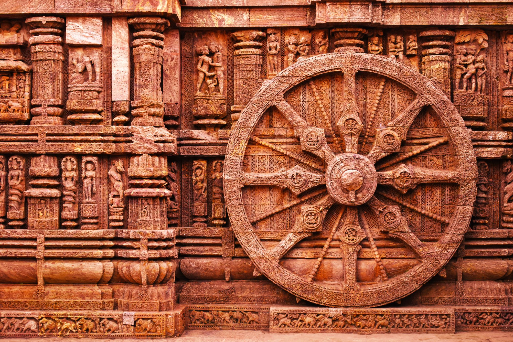

Witness one of the world's oldest and grandest chariot festivals.
Experience the sacred energy of Puri, the eternal Purushottam Dham, during Rath Yatra - one of India's grandest spiritual celebrations honouring Lord Sri Krishna. In this immersive 4-day journey, witness the awe-inspiring Rath Yatra procession from a royal VIP viewing space, with guided temple visits, a heritage walk, Mahaprasad, and complete on-ground support.
Contact Us to Plan Your Trip* Chat with Us on WhatsApp*Bookings open till June 30, 2026, for travel between July 15-18, 2026. Terms & Conditions apply.
Watch the magnificent chariot procession from the terrace of a royal palace near the Puri Jagannath Mandir.
Expert-guided visits to three of Odisha's most revered and architecturally stunning shrines.
Receive the sacred Mahaprasad of Lord Jagannath, exclusively arranged for you.
A heritage walk through Odisha's living craft village, home to Pattachitra painters, stone carvers, and traditional artisans.
A visit to the UNESCO World Heritage Konark Sun Temple and the serene Chandrabhaga Beach.
Carefully selected itinerary, dedicated tour manager, unhurried pace, crowd management support, and thoughtful assistance throughout.
Arrive in Bhubaneswar in the early morning. Private transfer awaits you at the airport — your journey into Odisha's sacred heart begins.
One of the oldest and largest temples in Bhubaneswar, dedicated to Harihara (a combined form of Shiva and Vishnu). An extraordinary specimen of Kalinga-style temple architecture, dating back to the 11th century.
A jewel of early Odishan temple art, renowned for its intricately carved torana (gateway) and detailed sculptural panels. Often described as a masterpiece of Kalinga architecture.
Fill in these details to view the complete 4-day Rath Yatra itinerary.
A 11th-century temple celebrated for its remarkable sculptures of apsaras and dikpalas (guardians of the eight directions). Known as the "love temple" of Bhubaneswar for its exquisite carvings.
A leisurely vegetarian lunch before the drive to Puri.
A heritage walk through Odisha's most celebrated craft village, home to master Pattachitra painters, stone carvers, and traditional artisans. Every home here is also a studio — a deeply moving encounter with living tradition.
Settle in at a premium 3-star beachside hotel in Puri. Fresh up and prepare for an evening of devotion.
Receive the sacred Mahaprasad of Lord Jagannath, exclusively arranged for you. Considered among the holiest blessings a devotee can receive, the Mahaprasad is prepared in the world's largest temple kitchen and carries Lord Jagannath's divine grace.
Early morning transfers by auto to the exclusive VIP area near the Jagannath Puri Mandir — positioned for an unobstructed and intimate view of the grand chariot procession.
A nourishing vegetarian breakfast served at the VIP corridor, so you can settle in and witness the morning rituals and preparations before the chariots are pulled.
Witness Lord Jagannath, Balabhadra, and Subhadra emerge from the Jagannath Temple on their magnificent chariots — Nandighosh, Taladhwaja, and Darpadalana — as millions of devotees gather to pull them towards Gundicha Temple. Comfort arrangements, dedicated crowd management support, unlimited tea, coffee, and water are provided throughout the day.
A special vegetarian lunch served at the VIP area, so you need not miss a moment of the proceedings.
High tea at the VIP corridor followed by auto transfers back to the hotel. Buffet dinner and overnight rest.
A relaxed breakfast before a morning of further darshan.
Visit the Gundicha Temple — the "garden house" of Lord Jagannath, where the deities reside for 9 days during the Rath Yatra period. This is considered one of the most auspicious times to visit, as the Lord is believed to be more accessible to devotees here.
Walk the outer Parikrama (circumambulation path) of the great Jagannath Temple — one of the four sacred Dhams of India — soaking in the sacred energy of the precinct.
Explore the vibrant Rath Yatra fair — a colourful world of Odishan handicrafts, Pattachitra art, stone carvings, local delicacies, and festive offerings. A wonderful opportunity to take home a piece of Puri's sacred culture.
Buffet lunch back at the hotel, followed by free time for personal shopping, rest, or a quiet walk by the beach.
Breakfast at the hotel. Checkout by 9 AM and prepare for the scenic return journey.
A visit to the magnificent 13th-century Konark Sun Temple — a UNESCO World Heritage Site. Conceived as a colossal chariot of the sun god Surya, with 24 intricately carved stone wheels and seven horses, it is one of India's greatest architectural marvels.
A quiet moment at Chandrabhaga Beach — serene, unspoiled, and considered sacred for its association with sun worship. A peaceful close to a deeply spiritual journey.
Drive back to Bhubaneswar Airport via the scenic marine route. Depart with hearts full of Lord Jagannath's blessings.
*Bookings open till June 30, 2026, for travel between July 15-18, 2026. Terms & Conditions apply.

3 nights in a premium 3-star beachside hotel in Puri
Vegetarian breakfast, lunch, and dinner as specified in the itinerary; special high tea during Rath Yatra
Private airport transfers and all inter-city travel; auto transfers for Rath Yatra day
Reserved VIP viewing space in the royal palace near the Jagannath Puri Mandir
Professional guided temple tours, heritage walks, and dedicated tour manager for the full journey
Exclusive Mahaprasad arrangement and a specially curated souvenir for the trip
Single: ₹74,900/- per person on non-sharing basis
Couple: ₹64,900/- per person on twin-sharing basis
(Travel to/from Bhubaneswar is not included. We can facilitate flight and train bookings for you.)
Secure your place in this once-a-year sacred journey to Puri — July 15–18, 2026
*Bookings open till June 30, 2026, for travel between July 15-18, 2026. Terms & Conditions apply.
For any immediate queries, please call us directly at +91 9902930443